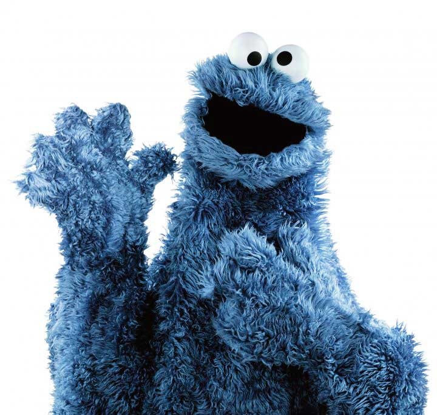
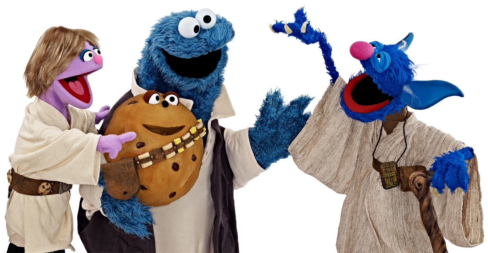

El Monstruo de las Galletas (en inglés, Cookie Monster), también conocido como Triki en España o simplemente llamado Lucas
en Latinoamérica, es uno de los títeres del programa educativo infantil llamado Barrio Sésamo en España y Plaza Sésamo en
Hispanoamérica. Su aspecto está caracterizado por un pelo de color azul oscuro, una boca enorme desprovista de dientes, ojos grandes y saltones
y un voraz apetito característico, además de frases en las que expresa sus grandes ganas de comer: «¡Yo querer galleta!»,
«¡Yo comer galleta!» y «¡Aumm ñam ñiam ñiam ñiam!», «¡Aumm ñam ñiam ñiam ñiam!» (esta última onomatopéyica y pronunciada con la boca llena de comida). Su voz es grave y brusca, y su forma de hablar es simplificada, usando abundancia de infinitivos y omitiendo otros complementos
lingüísticos. Come prácticamente cualquier cosa, no solamente galletas, incluyendo panecillos, rosquillas, manzanas, plátanos,
lechuga, así como otros objetos no comestibles, como dispensadores de sal y pimienta, señales de tráfico, toallas, lapiceros,
máquinas de escribir, teléfonos, motocicletas, premios Peabody, un camión, una caja fuerte, un Volkswagen Beetle, y la letra
del día. De cualquier manera, como su propio nombre indica, su comida preferida son las galletas. En concreto, su tipo preferido
de galletas son las de chocolate, seguidas muy de cerca por las galletas de avena.

Monster Cokie, saludando y presentandose, Quiero ser tu amigo y ¿tú?
Estudios
Avia una vez
Aqui terminamos pronto, todos esos y unos pocos mas, un pena de vida .....
Experiencia

Monster Cokie, Jedi
En 2006, en respuesta a los niveles alarmantemente altos de obesidad infantil en los Estados Unidos, Barrio Sésamo comenzó
a emitir una sección titulada "Hábitos de Vida Saludable". En esta sección, las marionetas de Barrio Sésamo hablan sobre
la necesidad de mantener una dieta sana y la práctica de ejercicio. Esta sección generó una serie de rumores que circularon
por Internet acerca de que el nombre del Monstruo de las Galletas cambiaría por el de "Veggy Monster" (lit. Monstruo de los
Vegetales, o de las Verduras), o que incluso sería eliminado totalmente del programa
En 2007, en su aparición en el programa de televisión de Martha Stewart, el Monstruo de las Galletas explicó su nueva filosofía,
consistente en que "...las galletas un alimento ocasional".
El 10 de febrero de 2008, la presentadora de la NPR, Elizabeth Blair, entrevistó al Monstruo de las Galletas para la sección
In Character del programa "All Things Considered". Respondió al cuestionario Proust, así como también reveló algunas de sus
cosas predilectas y no tan predilectas.
El 19 de junio de 2008, apareció en el programa The Colbert Report, y allí el Monstruo de las Galletas explicó otra vez que
"... las galletas son un alimento ocasional". Colbert le preguntó muy agitado la razón por la cual el Monstruo de las Galletas
había "abandonado su política pro-galletas", y que relación había entre esto y que las frutas se hubiesen convertido en el
refrigerio favorito de los niños americanos, según un estudio que Colbert había escuchado. El Monstruo de las Galletas también
afirmó que vivió unos "años locos" durante los 70 y los 80, apodándose a sí mismo como el "Robert Downey Jr. de las galletas".
Después de comerse una galleta para probar que aun le gustan las galletas, le preguntó al presentador si su premio Peabody,
un gran medallón en un pequeño pedestal, era una galleta.5 Cuando Colbert volvió a hablar con el Monstruo de las Galletas
al final de su programa, el premio había desaparecido mientras el Monstruo de las Galletas se limpiaba la boca con una servilleta.6